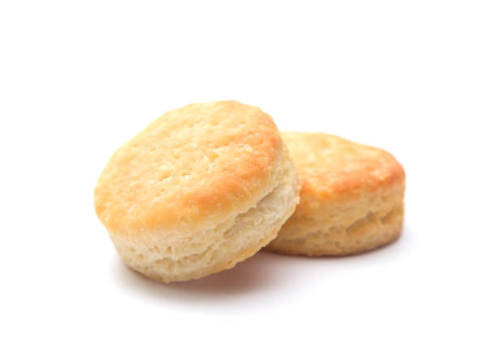

Biscuit

Description
This homemade biscuit recipe uses simple ingredients and baking powder as the leavening. The biscuits turn out golden brown and super tender inside.
Ingredients
- Flour: All-purpose flour holds the ingredients together. Also, the protein in flour (when combined with moisture and heat) creates gluten, which provides structure.
- Baking Powder: Baking powder, not yeast, is used as a leavener in this easy biscuit recipe. It causes the dough to expand, giving the biscuits volume and texture.
- Shortening: Shortening is made of purely fat, unlike butter which contains water and milk solids. This means it's better at reducing (or "shortening!") gluten strands, resulting in a soft and crumbly biscuit.
- Salt: Salt acts as a flavor enhancer and it strengthens the protein in the dough.
- Milk: Cold milk adds moisture, flavor, and structure to the biscuit dough.
Steps
- Prepare the Dough: Sift the dry ingredients into a large bowl. Cut in the shortening, then add the milk. Mix until the dough is soft and doesn't stick to the side of the bowl.
- Knead and Roll: Turn the dough out onto a lightly floured surface and knead briefly. Roll the dough into an even sheet that's about ½-inch thick.
- Cut and Bake: Use a lightly floured biscuit cutter to cut out the biscuits. Place the cut biscuits on an ungreased baking sheet. Re-roll the dough, repeating the cutting process, until all the dough is gone. Bake until golden brown.